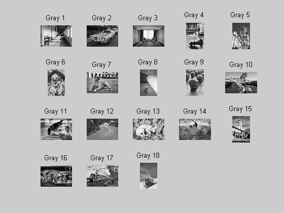
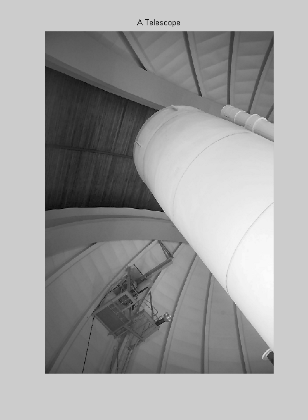
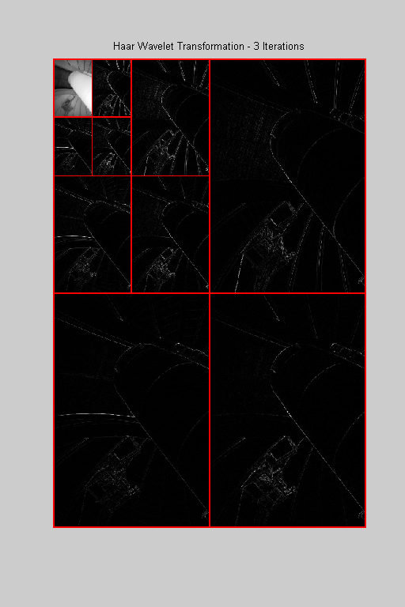
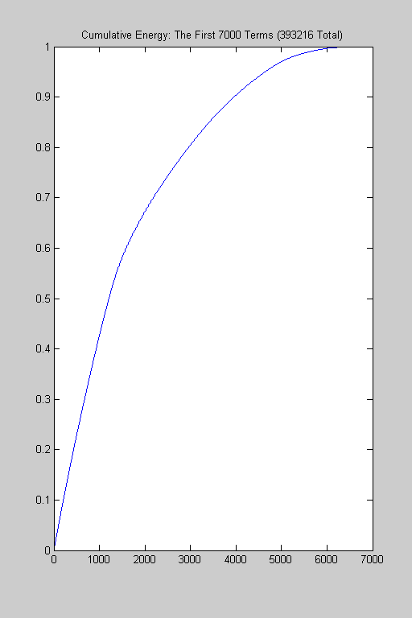
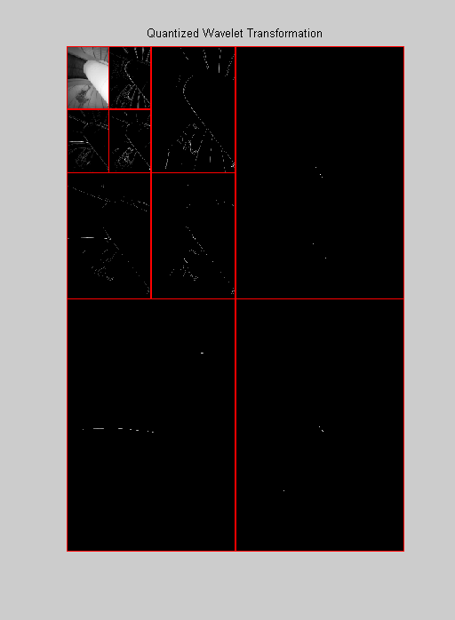

<!DOCTYPE html
  PUBLIC "-//W3C//DTD XHTML 1.0 Strict//EN">
<html xmlns:mwsh="http://www.mathworks.com/namespace/mcode/v1/syntaxhighlight.dtd">
   <head>
      <meta http-equiv="Content-Type" content="text/html; charset=utf-8">
   
      <!--
This HTML is auto-generated from an M-file.
To make changes, update the M-file and republish this document.
      -->
      <title>Grayscale Image Compression</title>
      <meta name="generator" content="MATLAB 7.5">
      <meta name="date" content="2007-12-30">
      <meta name="m-file" content="grayscalecompression"><style>
      <link rel="stylesheet" type="text/css" href="style.css">
</head>
   <body>
<div class="header">
	<div class="left"><a href="matlab:edit grayscalecompression">Open grayscalecompression.m in the Editor</a></div>
      <div class="right"><a href="matlab:echodemo grayscalecompression">Run in the Command Window</a></div>
</div>
      <div class="content">
         <h1>Grayscale Image Compression</h1>
         <introduction>
            <p>We can use discrete wavelet transformations to perform naive image compression.  We can compute the wavelet transformation
               of an image, construct the cumulative energy vector for the transformation, quantize the transform based on a decision we
               make regarding this vector, and then find the Huffman codes for the modified transformations.  We can measure the effectiveness
               of the compressed image by computing the bitstream length of the Huffman-coded modified transformation.
            </p>
         </introduction>
         <h2>Contents</h2>
         <div>
            <ul>
               <li><a href="#1">Import a Digital Image</a></li>
               <li><a href="#3">Compute the Discrete Wavelet Transformation</a></li>
               <li><a href="#4">Construct the Cumulative Energy Vector</a></li>
               <li><a href="#5">Set Energy Level</a></li>
               <li><a href="#6">Quantize the Transformation</a></li>
               <li><a href="#7">Compute the Huffman Codes for the Modified Transformation</a></li>
               <li><a href="#8">View the Compressed Image</a></li>
               <li><a href="#9">Analysis</a></li>
               <li><a href="#10">Things to Try</a></li>
            </ul>
         </div>
         <h2>Import a Digital Image<a name="1"></a></h2>
         <p>We begin by importing a digital image. We will use one of the images that comes, courtesy of Radka Tezaur, with the DiscreteWavelets
            Toolbox.  The command ShowThumbnails can be used to see what choices are available.
         </p><pre class="codeinput">ShowThumbnails(<span class="string">'ImageType'</span>,<span class="string">'GrayScale'</span>);

<span class="comment">%Let's use Gray 8.</span>
</pre> <p>The code below reads this image from disk and plots it. ImageNames gives the absolute path to all included image files.</p><pre class="codeinput">gry=ImageNames(<span class="string">'ImageType'</span>,<span class="string">'GrayScale'</span>);

<span class="comment">% Use ImageRead to read the image and store it in matrix A.</span>
A=ImageRead(gry{8});

<span class="comment">% Use ImagePlot to plot the image.</span>
clf;
ImagePlot(A);
title(<span class="string">'A Telescope'</span>);
</pre> <h2>Compute the Discrete Wavelet Transformation<a name="3"></a></h2>
         <p>We will use the discrete Haar wavelet transformation for this demo.   We next compute three iterations of the modified HWT.
             The transforation is modified by multiplying the filter [sqrt(2)/2, sqrt(2)/2] by sqrt(2).  In this way the filter will map
            integers to integers and improve the performance of the Huffman coder.  We need to remember to divide the inverse transform
            by sqrt(2) when we view the compressed image.
         </p><pre class="codeinput"><span class="comment">% Compute the HWT and store in matrix B.</span>
its=3;
h=sqrt(2)*Haar();
B=WT2D(A,h,its);

<span class="comment">% Plot the HWT.</span>
clf;
WaveletDensityPlot(B,its,<span class="string">'DivideLinesColor'</span>,[1 0 0],<span class="keyword">...</span>
    <span class="string">'DivideLinesThickness'</span>,[2 2 2])
title(sprintf(<span class="string">'Haar Wavelet Transformation - %i Iterations'</span>,its));
</pre> <h2>Construct the Cumulative Energy Vector<a name="4"></a></h2>
         <p>We now construct the cumulative energy vector for B.</p><pre class="codeinput"><span class="comment">% Construct the cumulative energy vector.</span>
cewt=CE(B);

<span class="comment">% Plot the first 7000 terms.</span>
n=7000;
N=numel(A);
str=sprintf(<span class="string">'Cumulative Energy: The First %i Terms (%i Total)'</span>,n,N);
close;
plot(cewt(1:7000));
title(str);
</pre> <h2>Set Energy Level<a name="5"></a></h2>
         <p>We next determine the number of terms in B needed to comprise 100*r% of the energy in B.</p><pre class="codeinput"><span class="comment">% Set the energy level.</span>
r=.9997;

k=nCE(cewt,r);
str=sprintf(<span class="string">'The largest %i elements (in absolute value) of the B constitute %f%% \nof the total energy of the transformation.'</span>,k,100*r);
disp(str);
</pre><pre class="codeoutput">The largest 9335 elements (in absolute value) of the B constitute 99.970000% 
of the total energy of the transformation.
</pre><h2>Quantize the Transformation<a name="6"></a></h2>
         <p>We now use the Comp function to quantize the transformation.  The routine retains the largest (in absolute value) elements
            needed to comprise 100r% of the transformation and converts all other values to 0.  Note that the highpass portions of the
            modified transformation are quite different from their original counterparts.
         </p><pre class="codeinput"><span class="comment">% Perform the quantization.</span>
newB=Comp(B,k);
str=sprintf(<span class="string">'We set %i elements in the transform to 0.  This constitutes %f%% \nof the total number of elements in B.'</span>,N-k,100*(N-k)/N);
disp(str);

<span class="comment">% Plot the modified transformation.</span>
close;
WaveletDensityPlot(newB,its,<span class="string">'DivideLinesColor'</span>,[1 0 0],<span class="keyword">...</span>
    <span class="string">'DivideLinesThickness'</span>,[2 2 2]);
title(<span class="string">'Quantized Wavelet Transformation'</span>);
</pre><pre class="codeoutput">We set 383881 elements in the transform to 0.  This constitutes 97.625987% 
of the total number of elements in B.
</pre> <h2>Compute the Huffman Codes for the Modified Transformation<a name="7"></a></h2>
         <p>We now compute the Huffman codes for the modified transformation.  Note that we have shifted the elements of newB so that
            the minimum is 0.  We have also rounded the shifted newB since MakeHuffmanCodes requires integer input.  The computations
            were previously done in floating point arithmetic to improve computation speed.  The rounding is valid at this step since
            the modified HWT maps integers to integers.
         </p><pre class="codeinput"><span class="comment">% Make the Huffman codes.</span>
[uniq,freq,codes,origlen,newlen]=MakeHuffmanCodes(round(newB-min(min(newB))));

<span class="comment">% Here is some information on the output:</span>
str=sprintf(<span class="string">'The original bitstream length is %i and the new bitstream length is %i.'</span>,origlen,newlen);
disp(str);

bpp=newlen/N;
str=sprintf(<span class="string">'The bits per pixel for the new bitstream is %f bpp.'</span>,bpp);
disp(str);

<span class="comment">% To get an idea of the best case compression scenario we compute the</span>
<span class="comment">% entropy of newB.</span>
e=Entropy(newB);
str=sprintf(<span class="string">'The entropy of newB is %f.'</span>,e);
disp(str);
</pre><pre class="codeoutput">The original bitstream length is 3145728 and the new bitstream length is 507097.
The bits per pixel for the new bitstream is 1.289614 bpp.
The entropy of newB is 0.465370.
</pre><h2>View the Compressed Image<a name="8"></a></h2>
         <p>Finally we apply the inverse transform to view the compressed image.  We also plot the original image for comparative purposes.</p><pre class="codeinput"><span class="comment">% Compute the inverse transformation - don't forget to divide by sqrt(2)!</span>
h=Haar()/sqrt(2);
compressedA=IWT2D(newB,h,its);

<span class="comment">% Plot the compressed image.</span>
close;
ImagePlot(compressedA);
title(<span class="string">'Compressed Image'</span>);

<span class="comment">% Plot the original image - make a second figure</span>
figure;
ImagePlot(A);
title(<span class="string">'Original Image'</span>);
</pre>  <h2>Analysis<a name="9"></a></h2>
         <p>The compressed image is not as sharp as the original.  But the compression rate is very good - about 1.289bpp!  Note that
            the entropy is approximately .465, so we would expect to achieve a better bpp if we used a coder a bit more sophisticated
            than Huffman's.
         </p>
         <h2>Things to Try<a name="10"></a></h2>
         <p>Make a copy of this demo and :</p>
         <div>
            <ul>
               <li>try different images</li>
               <li>try different transformations</li>
               <li>in particular, try LeGall with IntegerMap set to True</li>
               <li>use different percentages for quantizing the cumulative energy vector</li>
               <li>change the value of iterations to any integer 1, 2,..., 8</li>
            </ul>
         </div><pre class="codeinput">close <span class="string">all</span>;
</pre><p class="footer"><br>
            Published with MATLAB&reg; 7.5<br></p>
      </div>
      <!--
##### SOURCE BEGIN #####
%% Grayscale Image Compression
% We can use discrete wavelet transformations to perform naive image
% compression.  We can compute the wavelet transformation of an image,
% construct the cumulative energy vector for the transformation, quantize the
% transform based on a decision we make regarding this vector, and then
% find the Huffman codes for the modified transformations.  We can measure
% the effectiveness of the compressed image by computing the bitstream
% length of the Huffman-coded modified transformation.

%% Import a Digital Image
% We begin by importing a digital image. We will use one of the images that comes, courtesy of Radka Tezaur, with 
% the DiscreteWavelets Toolbox.  The command ShowThumbnails can be used to see what choices are available.
ShowThumbnails('ImageType','GrayScale');

%Let's use Gray 8.

%% 
% The code below reads this image from disk and plots it.
% ImageNames gives the absolute path to all included image files.
gry=ImageNames('ImageType','GrayScale');

% Use ImageRead to read the image and store it in matrix A.
A=ImageRead(gry{8});

% Use ImagePlot to plot the image.
clf;
ImagePlot(A);
title('A Telescope');

%% Compute the Discrete Wavelet Transformation
% We will use the discrete Haar wavelet transformation for this demo.   We next compute three iterations
% of the modified HWT.  The transforation is modified by multiplying the
% filter [sqrt(2)/2, sqrt(2)/2] by sqrt(2).  In this way the filter will
% map integers to integers and improve the performance of
% the Huffman coder.  We need to remember to divide the inverse transform
% by sqrt(2) when we view the compressed image.

% Compute the HWT and store in matrix B.
its=3;
h=sqrt(2)*Haar();
B=WT2D(A,h,its);
 
% Plot the HWT.
clf;
WaveletDensityPlot(B,its,'DivideLinesColor',[1 0 0],...
    'DivideLinesThickness',[2 2 2])
title(sprintf('Haar Wavelet Transformation - %i Iterations',its));

%% Construct the Cumulative Energy Vector
% We now construct the cumulative energy vector for B.  

% Construct the cumulative energy vector.
cewt=CE(B);

% Plot the first 7000 terms.
n=7000;
N=numel(A);
str=sprintf('Cumulative Energy: The First %i Terms (%i Total)',n,N);
close;
plot(cewt(1:7000));
title(str);

%% Set Energy Level
% We next determine the number of terms in B needed to comprise 100*r% of
% the energy in B.

% Set the energy level.
r=.9997;

k=nCE(cewt,r);
str=sprintf('The largest %i elements (in absolute value) of the B constitute %f%% \nof the total energy of the transformation.',k,100*r);
disp(str);

%% Quantize the Transformation
% We now use the Comp function to quantize the transformation.  The routine
% retains the largest (in absolute value) elements needed to comprise 100r%
% of the transformation and converts all other values to 0.  Note that the
% highpass portions of the modified transformation are quite different from
% their original counterparts.

% Perform the quantization.
newB=Comp(B,k);
str=sprintf('We set %i elements in the transform to 0.  This constitutes %f%% \nof the total number of elements in B.',N-k,100*(N-k)/N);
disp(str);

% Plot the modified transformation.
close;
WaveletDensityPlot(newB,its,'DivideLinesColor',[1 0 0],...
    'DivideLinesThickness',[2 2 2]);
title('Quantized Wavelet Transformation');

%% Compute the Huffman Codes for the Modified Transformation
% We now compute the Huffman codes for the modified transformation.  Note
% that we have shifted the elements of newB so that the minimum is 0.  We
% have also rounded the shifted newB since MakeHuffmanCodes requires
% integer input.  The computations were previously done in floating point
% arithmetic to improve computation speed.  The rounding is valid at this
% step since the modified HWT maps integers to integers.

% Make the Huffman codes.
[uniq,freq,codes,origlen,newlen]=MakeHuffmanCodes(round(newB-min(min(newB))));

% Here is some information on the output:
str=sprintf('The original bitstream length is %i and the new bitstream length is %i.',origlen,newlen);
disp(str);

bpp=newlen/N;
str=sprintf('The bits per pixel for the new bitstream is %f bpp.',bpp);
disp(str);

% To get an idea of the best case compression scenario we compute the
% entropy of newB.
e=Entropy(newB);
str=sprintf('The entropy of newB is %f.',e);
disp(str);

%% View the Compressed Image
% Finally we apply the inverse transform to view the compressed image.  We
% also plot the original image for comparative purposes.

% Compute the inverse transformation - don't forget to divide by sqrt(2)!
h=Haar()/sqrt(2);
compressedA=IWT2D(newB,h,its);

% Plot the compressed image.
close;
ImagePlot(compressedA);
title('Compressed Image');

% Plot the original image - make a second figure
figure;
ImagePlot(A);
title('Original Image');

%% Analysis
% The compressed image is not as sharp as the original.  But the
% compression rate is very good - about 1.289bpp!  Note that the entropy is
% approximately .465, so we would expect to achieve a better bpp if we used
% a coder a bit more sophisticated than Huffman's.

%% Things to Try
% Make a copy of this demo and :
%
% * try different images
% * try different transformations
% * in particular, try LeGall with IntegerMap set to True
% * use different percentages for quantizing the cumulative energy vector
% * change the value of iterations to any integer 1, 2,..., 8
% 

%%
close all;
displayEndOfDemoMessage(mfilename)


##### SOURCE END #####
-->
   </body>
</html>